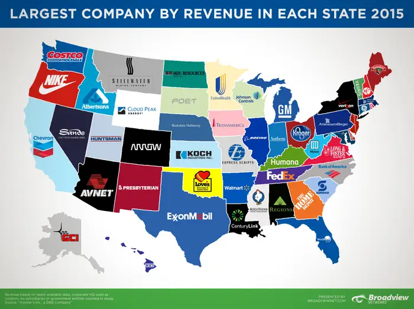

Used Python and its libraries for data manipulation, Google Colab for environment and development,
Bokeh and Plotly for vsualizations, SQL for Data cleaning and dataset refinement.


The Online Shopping Behavior Analysis project using Python and open-source Jupyter Notebook with the use of NLP's Spacy library and Named Entity Recognition, examines clickstream data to uncover patterns and trends influencing purchasing decisions, with a focus on optimizing user experiences and exploration of increasing e-commerce conversion rates.

The Amazon Feedback Sentiment Analysis project analyzes customer reviews using Python libraries such as pandas, nltk, and VADER.
It helps businesses gauge customer sentiment to improve products and services, developed in a Jupyter Notebook environment.

This Project was intended to take the financial statements into a CSV file of these companies and then doing analytics and visualizations
After that inculcated this data and created a web app using Python and Flask.
You can write your prompts and expect an answer while selecting company as a category.

The web scraping project involved extracting data from a Wikipedia page, transforming it into a CSV file for analysis. Python libraries such as BeautifulSoup and API requests (page.get) were employed, with the entire process conducted in an AWS EMR Cluster and a Jupyter Lab workspace

The Django Item Dashboard API manages items with features like item retrieval, addition, and user authentication using Django REST Framework.
The project includes secure API endpoints for login, signup, and item management, with SQLite as the default database, and testing for all core functionalities and APIs in Postman.

In this project, I analyzed global COVID-19 data using SQL to explore trends in cases, deaths, and vaccinations.
By applying JOINs, PARTITION BY, WINDOW FUNCTIONS, and VIEWS, I derived insights into infection rates, death percentages, and vaccination progress across countries.
The project involved handling large datasets and extracting key metrics to visualize the pandemic's impact globally.